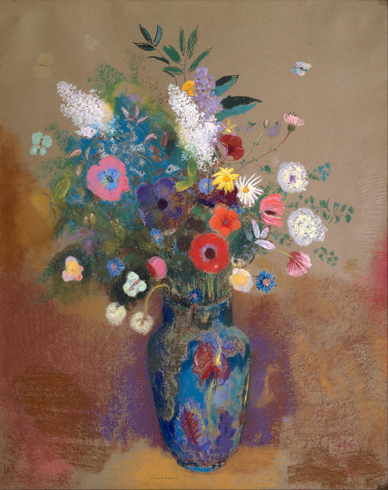

花束
先看花瓶，再让视线慢慢散开：有些丰盛，不需要被整理得整整齐齐。
下方的瓶口收束。上方的花枝散开，一密一疏。
蓝绿紫相邻，红蓝局部近互补。暖褐底色，让鲜色更醒目。
白花与深叶交替。明度的节拍，让繁复仍然清晰。
近似练习色与建议比例，非原作测色或面积统计。
纸本粉彩。颗粒、短触与细线在数字图像中仍清楚可见。
法国画家 Odilon Redon，1840–1916。年轻时对生物学有浓厚兴趣。
花朵有伸展，也有垂落。一只安静的瓶，容纳不同的姿态。
60% 暖褐 + 30% 深蓝 + 10% 珊瑚红。用一点暖白，点亮视觉焦点。
下部放稳定形体，上部一密一疏。留一片空背景，让细节有地方呼吸。
《花束》 · Odilon RedonThe Metropolitan Museum of Art · 56.50
版权归原作者（如适用）；馆方标注本图为公有领域。赏析为独立观点，不代表收藏机构立场。